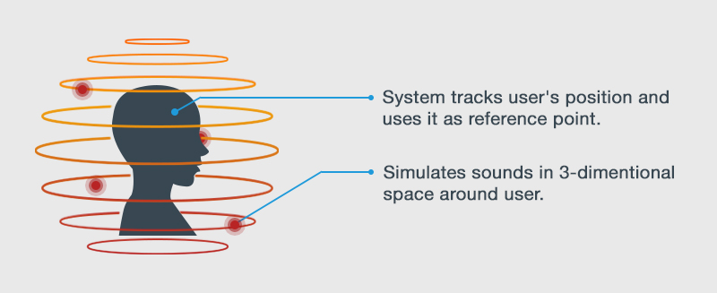
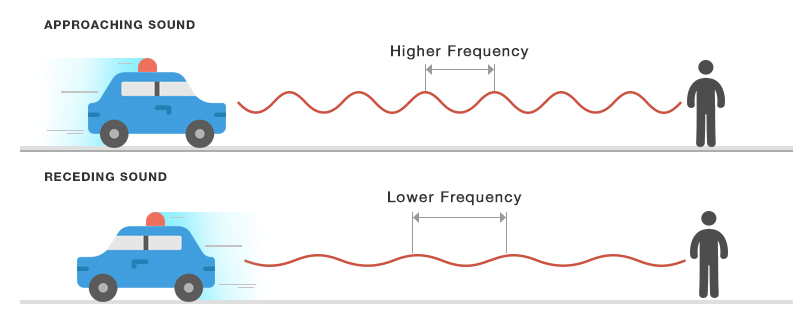
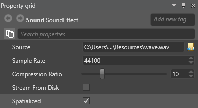

空間オーディオ
初級 デザイナー プログラマー
空間オーディオは 3D オーディオとも呼ばれ、3 次元のサウンドをシミュレートします。 これにより、非空間オーディオよりはるかに現実的なオーディオが作成されます。
現実の世界で聞こえる音は、ボリューム、周囲の環境 (洞窟、小さい部屋など)、音源の位置と動きなどの要因によって影響を受けます。たいていは、音がどちらから聞こえてきて、音源が動いているかどうかが、だいたいわかります。

たとえば、動いている物体から聞こえてくる音の周波数 (ピッチ) は、観察者の位置によって異なります (ドップラー効果)。近づいている音源からの音は、遠ざかっている音源からの音より、周波数が高くなります。

リアルな 3D オーディオをシミュレートするため、Stride はシーン内にある次の 2 つのエンティティの位置を追跡しています。
- オーディオ エミッター: オーディオを生成します
- オーディオ リスナー: オーディオ エミッターによって生成されたサウンドを聴きます
シーン内の空間オーディオを聴くには、オーディオ エミッターとオーディオ リスナーの両方が必要です。
空間オーディオは、プラットフォーム、デスクトップ、VR ゲームのサウンド エフェクトに広く利用されています。たとえば、銃の発砲音や、キャラクターの足音などです。
Note
空間オーディオは、非空間オーディオより多くの CPU を使用します。
空間オーディオを有効にする
サウンド アセットをインポートするときに、アセットの種類として［Spatialized Sound］を選択します。
アセットの［Property grid］で空間オーディオに設定することもできます。
［Asset View］で［Audio Asset］を選択します。
［Property grid］で、［Spatialized］チェック ボックスをオンにします。

Note
Stride は空間オーディオをモノラル (単一チャンネル) オーディオとして処理します。ソース ファイルが変更されることはありません。